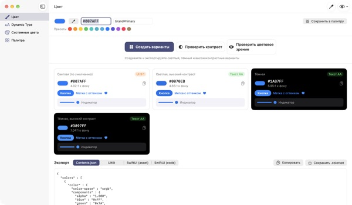
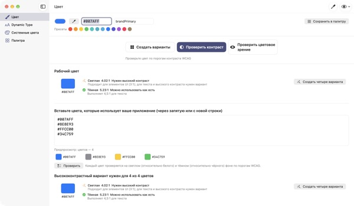
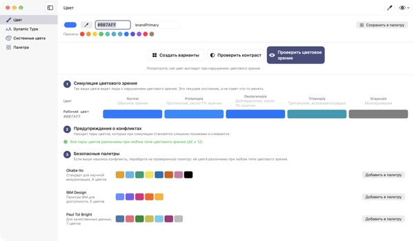
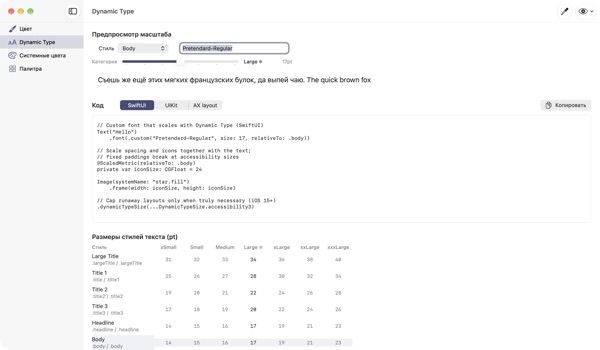

Один цвет на входе,
четыре режима на выходе
Системные цвета сами подстраиваются под тёмный режим и «Увеличение контраста», а фирменные остаются как есть. TetraTint берёт один цвет светлого режима, строит светлый, светлый контрастный, тёмный и тёмный контрастный варианты и сразу выгружает их в Xcode.
Все функции бесплатны. Нужна macOS 14 или новее.

Проверьте свой фирменный цвет
Вставьте hex или нажмите пресет. Тот же расчёт, что в приложении, сразу покажет четыре варианта и их контраст с фоном.
Фирменный цвет терялся в тёмном режиме?
Синий, выбранный в светлом режиме, на чёрном выглядит грязным, а у тех, кто включил «Увеличение контраста», текст едва читается. Подбирать цвет для каждого режима и считать контраст вручную можно полдня. TetraTint строит варианты так же, как меняются системные цвета между режимами, и сразу показывает, проходит ли каждый.
Проверка всех цветов разом
Вставьте весь список hex из приложения, и каждый цвет получит вердикт: можно использовать как есть, нужен высокий контраст или только для декора.
Проблемный цвет одним щелчком превращается в четыре варианта и сохраняется в палитру. Это помогает подготовиться к отметке «Достаточный контраст» в App Store.

Глазами людей с нарушением цветового зрения
Палитра показывается так, как её видят при протанопии, дейтеранопии, тританопии и в оттенках серого, а пары цветов, которые становятся неразличимы, отмечаются предупреждением.
Безопасные палитры Okabe–Ito, IBM и Paul Tol подключаются одним щелчком, а кнопка с глазом справа вверху показывает так всё приложение целиком.

Свой шрифт тоже следует размеру текста
Таблица 11 текстовых стилей в 7 размерах и ползунок, чтобы увидеть реальные размеры.
Введите PostScript-имя шрифта, и вы получите код для UIKit, SwiftUI и @ScaledMetric, а также код, меняющий раскладку при крупном тексте.

Три шага, чтобы начать
- 1
Задайте базовый цвет
Вставьте hex, возьмите цвет пипеткой в любом месте экрана или выберите пресет.
- 2
Проверьте четыре варианта
Посмотрите на значки контраста и подправьте варианты, которые выбиваются из стиля.
- 3
Выгрузите в Xcode
Скопируйте или сохраните как Contents.json, .colorset или код UIKit и SwiftUI.
Как строятся варианты и что значат значки
- Светлая (по умолчанию)
- Цвет как вы его ввели
- Светлая, высокий контраст
- Чуть насыщеннее и темнее, пока не наберёт 4.5:1 на белом
- Тёмная
- Немного светлее и ярче (светлота +5, насыщенность +3)
- Тёмная, высокий контраст
- Светлее, пока не наберёт 7:1 на чёрном
- Текст AA
- Контраст с фоном от 4.5:1, подходит для основного текста
- UI 3:1
- От 3:1, годится для кнопок и значков, но не для текста
- Низкий
- Меньше 3:1, не используйте для текста, значков и статусов
- Экспорт
- Contents.json · .colorset · UIKit · SwiftUI, вся палитра одним .xcassets
Справочные значения системных цветов взяты из Руководства Apple по интерфейсу и могут меняться с обновлениями ОС. В рабочем приложении используйте API системных цветов.
Частые вопросы
Это правда бесплатно?
Да. Все функции бесплатны, без аккаунта и рекламы. Если приложение помогло, в настройках можно оставить чаевые; они ничего не открывают.
Созданные варианты не попадают в фирменный стиль.
Каждый вариант можно подправить в окне выбора цвета на его карточке. «Создать всё заново» отбросит ручные правки и заново выведет всё из базового цвета.
По каким правилам строятся варианты?
По тому, как реально меняются системные цвета Apple между режимами: в тёмном чуть светлее и ярче, в светлом контрастном не меньше 4.5:1 на белом, в тёмном контрастном не меньше 7:1 на чёрном.
Что значит предупреждение в симуляции цветового зрения?
При таком зрении разница двух цветов (ΔE) падает ниже 12, и их трудно различить. Не передавайте состояние одним цветом: добавьте значки, узоры или подписи либо перейдите на безопасную палитру.
Как научить свой шрифт Dynamic Type?
На экране Dynamic Type введите PostScript-имя шрифта и выберите стиль, и появится код для UIKit, SwiftUI и @ScaledMetric. В размерах для универсального доступа Body вырастает больше чем втрое, поэтому избегайте фиксированной высоты и lineLimit(1).
Выгруженные цвета выглядят иначе, чем системные в приложении.
Справочные значения системных цветов взяты из Руководства по интерфейсу и могут меняться от версии к версии ОС. Системные цвета всегда используйте через API UIColor или Color.
Где хранится сохранённая палитра?
Только на вашем Mac. Ничего не синхронизируется с облаком и никуда не отправляется. Подробнее в политике конфиденциальности.
Сохраняется ли цвет, взятый пипеткой?
Нет. Считывается только значение цвета в выбранной точке и становится рабочим цветом. Изображение экрана не сохраняется и не отправляется.
На каких Mac работает?
На macOS 14 (Sonoma) и новее. При экспорте место сохранения файлов вы выбираете сами.
Сообщения об ошибках, идеи и вопросы присылайте на leeo@kakao.com. Обычно отвечаем в течение 2–3 дней.